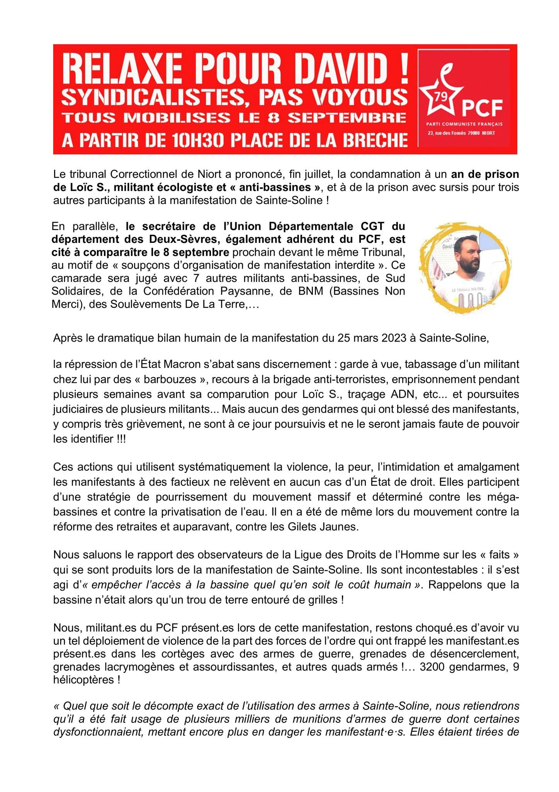
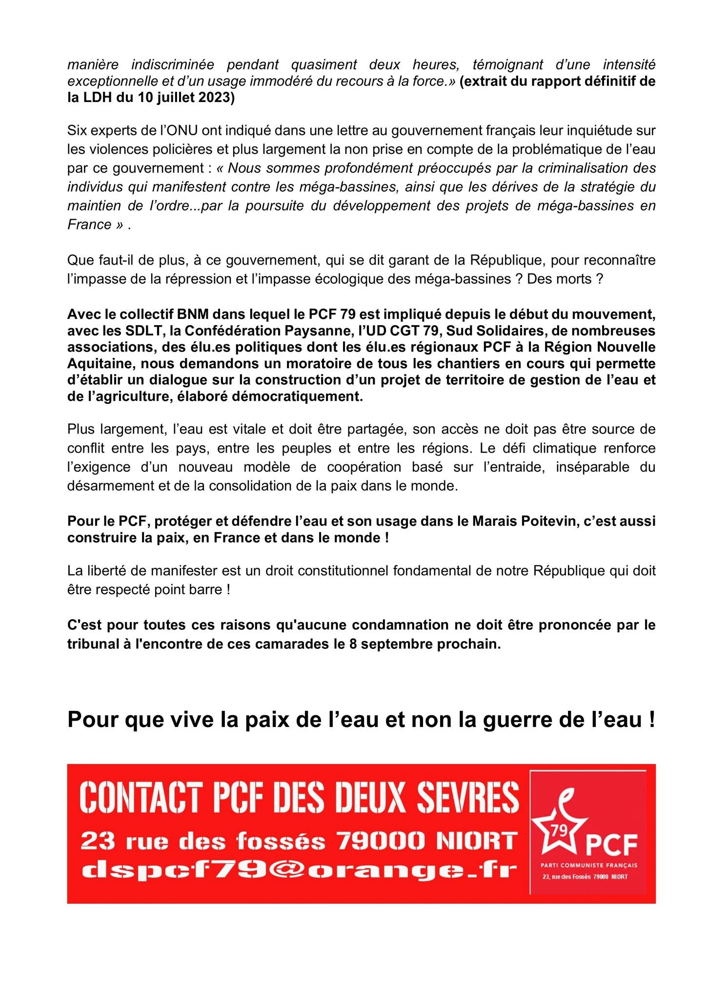

Communiqué de la fédération
À Niort, notre communiqué et l’appel au rassemblement du 8 septembre
Date indiquée par Facebook · 4 septembre 2023
Repères éditoriaux
Nous avons appelé à rejoindre le rassemblement de soutien à 10 h 30, place de la Brèche à Niort. Les deux pages conservées donnent les arguments et le rendez-vous.
Texte conservé avec la publication
Tous Mobilisés le 8 septembre à partir de 10h30 Place de la Brèche à NIORT.


Sources
Archive rouge · export Facebook · AR-0002-FB-01592
À lire aussi · À Niort, le rassemblement du 8 septembre pour l’eau en vidéo